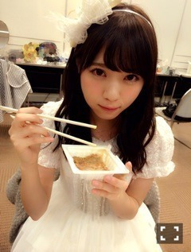
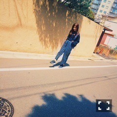

| 2016/07 07 Thu | 斎藤ちはる 七夕ですね(´>∀<｀)ゝ |
ちはるーむへようこそ\( ˆ ˆ )/
七夕ですよ〜
七夕って...早いですねえ...
今日は何年か振りに晴れたので
織姫と彦星は逢えたのかな？
逢えてるといいな...
天の川はみえたのかな？
私は見れてないけど...
皆さん何かお願い事しましたか？
私は紙の短冊に書けませんでした...
心で願えば叶うはず...
なんかマイナス思考っぽい
ブログの始まり方になっちゃった！
違うのに！プラス思考なのに！
七夕なので、とっても可愛いなーちゃんをあげちゃう！
七夕は関係ないけど、あげちゃう！

納豆食べてるのに、
可愛いって才能だよね、もはや。
天使に食される納豆は幸せだろうな。
と、怖いことを言ってみる。
夏だからね。
七夕だからね。
-------------------------♡

Samurai ELOの撮影のときに履いてた
スニーカーが可愛すぎたっていうのを
いま思い出した！！
どこのだっけ...
欲しい欲しいって騒いでたのに...
最近スニーカーが私の中でキテいて
靴屋さんやスポーツショップ行くと
必ずスニーカーを真っ先に見ちゃう！
元々靴は好きなんだけど、
最近はスニーカー熱\( ˆoˆ )/
かっこいいスニーカー履いてると
自分までカッコよくなった気分になる気がするの。
靴のサイズが24.5で大きめだから
頑張れば男ものスニーカーも履けそうだしね♪
スニーカーなら多少大きくても...って
足に悪いかな？？笑
皆さん、オススメのスニーカーとか
これかっこいいよ！っていうの
教えてください\( ˆ ˆ )/♡
皆さんの意見参考に、
ネットで色々調べてみるから...♪
-------------------------♡
今日、玲香に急に肩触られて
「肩なんてなくなっちゃえ！」
って言われたんだけど、
未だに意味が分からないんだよね...
どういう意味なんだろう...
その隣にいた真夏に
「首なんてなくなっちゃえ！」
って言われたんだけど、
それは真夏が私の首の長さにいつも疑問を抱きつつ羨ましがってるからなんだよね...
私は首だけは長いから。キリンなのかも。
首の長さが分かる写真ないかな？って
探してみたんだけど無かったから、
諦めて無関係な写真にしました。笑
今度真夏と比べてみよ〜っと(｡･o･｡)ﾉ
1年前から関係は変わりません。笑
-------------------------♡
前回のブログで言っていた
コーナー、まだまだ募集してます！
皆さんからのアイデアとコメント待ってます\( ˆ ˆ )/
Chiharu ♫ Now Playing
「ランアンドラン」KANA-BOONさん
好きな曲を紹介してくミニコーナー的なポジョンだよ〜！
おやすみ〜！
斎藤ちはる